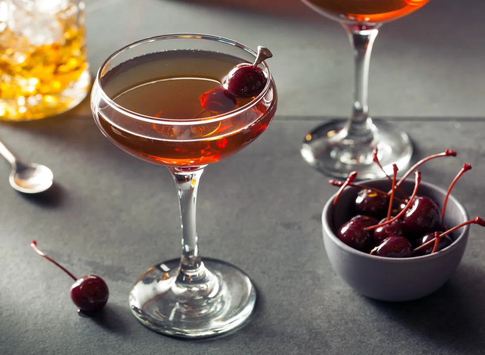

Home
Manhattan

Description
The Manhattan’s mix of American whiskey and Italian vermouth, enlivened with a few dashes of aromatic bitters, is timeless and tasty—the very definition of what a cocktail should be.
Ingredients
- 2 oz bourbon or rye whiskey
- 1 oz Sweet Vermouth
- 2 dashes Angostura bitters
- 1 dash orange bitters
- Brandied cherry garnish
Steps
- Add the bourbon (or rye), sweet vermouth and both bitters to a mixing glass with ice, and stir until chilled.
- Strain into a chilled coupe.
- Garnish with a brandied cherry.